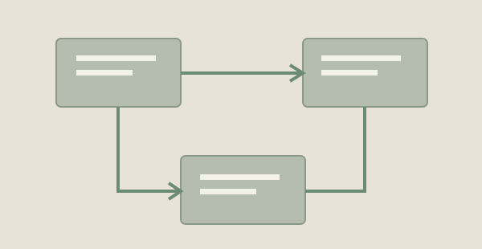

Industrial Operations / Technology / Strategy
Building American
industrial capability.
Working at the intersection of industrial operations, emerging technology, and strategic competition.
A practical interest in the systems, technologies, and execution behind a stronger American industrial economy.
Writing & Research
Independent analysis of industry, technology, and national competitiveness.
/ 02Projects & Portfolio
Technical exploration, operational models, and applied systems work.
/ 03Advisory & Service
Developing capabilities in process improvement and organizational problem-solving.
Perspective
Stronger systems.
Stronger industry.
A practical interest in the people, technologies, and institutions behind a resilient industrial economy.
I'm Anna, an industrial operations professional working in aerospace and defense manufacturing, with an academic background in systems and operations management.
I'm drawn to the challenge of rebuilding and modernizing America's industrial strength—not just through ideas or policy, but through the less visible work of planning, manufacturing, automation, and organizational execution.
This is a home for my independent writing, technical exploration, and projects at that intersection.
More about my backgroundMy Writing & Research
Questions worth exploring.
Independent research notes, analytical questions, and developing perspectives on technology, industry, and national competitiveness.
These are developing research topics, not published articles. Finished work will be clearly labeled when available.
View my writing & researchMy Projects & Portfolio
Ideas, tested in practice.
Technical exploration, analytical tools, and a future record of completed, permissioned case studies.

Autonomous Inventory Drones
Researching aerial robotics for warehouse inventory verification and industrial operations.
Research in progress ↗Planning & Decision Models
Independent frameworks for production planning, operational visibility, and business decisions.
Concept · Not yet published ↗
Organizational Improvement
A future space for authorized, measurable outcomes from skills-based volunteer work.
Future portfolio category ↗Advisory & Service
Practical work.
Lasting capability.
I'm building experience in operational problem-solving and interested in supporting organizations through skills-based volunteering and, over time, independent advisory work.
Interested in skills-based volunteering and community service as a way to learn, contribute, and build practical experience.
Explore areas of interest ↗